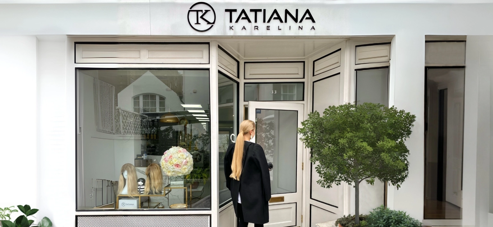

Hair Extension Salon in London
A quiet Kensington street. A sanctuary for your hair.
- 33 Holland StreetKensington, W8 4LX
- Tuesday to Saturday10am to 6.30pm
- Same day fittingsLarge Russian hair stock in salon
- 100% Russian hairColour matched without dye
The London salon
A Chic and Stylish Sanctuary in Kensington
Located on a quiet Kensington street, the Tatiana Karelina London salon is a chic and stylish sanctuary where glamour and trend setting styles go hand in hand. Eighteen years on, a roster of high profile clients, explosive press and cutting edge hair designs created with the finest Russian hair have enabled the salon to have a deep and lasting impact on the London beauty landscape.
What we offer in London
Every Method, Under One Roof
Micro Ring Hair Extensions
A semi permanent solution where natural hair is attached to the extension hair using tiny copper rings. A cost effective system compared to glued in extensions, as 100 percent of the hair can be reused. Discover micro rings.
Micro Bond Hair Extensions
A discreet and durable method, particularly suited to clients with finer or sparser hair. Each keratin bond is hand formed in the salon to match your natural hair's colour, texture and density, then applied strand by strand. Discover micro bonds.
Tape Hair Extensions
Versatile, undetectable and reusable. Our tapes are made in house using the same Russian hair as our salon applied extensions, with colour achieved not with dye but by blending multiple shades of natural hair into each tape. Discover tapes.
Clip In Hair Extensions
Handmade using the finest Russian hair. Hand tied wefts can be attached more securely and made slimmer than machine wefts, which means more comfort, less shedding and a much longer life. Discover clip ins.
Weft Hair Extensions
Machine and hand tied Russian hair wefts fitted with micro rings, no glue and no heat, for fuller, thicker hair with natural movement. Discover wefts.
Clip In Braids and Ponytails
A great way to update a hairstyle or transform your look in an instant with the snap of a clip. Our braids use a special weaving technique that combines shorter Russian hair into longer lengths, allowing a lower price point. Discover braids and ponytails.
Hair Toppers
Lightweight hairpieces that blend with your natural hair to add volume and cover thinning areas. A natural looking, confidence boosting solution for women experiencing hair loss. Discover hair toppers.
Medical Wigs
Specially designed for those experiencing hair loss from conditions or treatments. Breathable, natural looking bases and the finest Russian hair, custom fitted for comfort, security and a realistic appearance. Discover medical wigs.
Wedding hair
London Wedding Hair
It is your wedding day, the day when it matters more than ever that you look and feel beautiful, because this day will be encapsulated in people's memories and photographs. Long wedding hairstyles remain the favourite of most brides, and hair extensions are the perfect way to inject body, length and fullness into your hair. A visit to us can be done as little as 3 hours before the start of your big day, so as you walk down the aisle you will know all eyes are fixated on you.
Client reviews
What London Clients Say
The quality of extensions is TOP. It is, by no doubt, the best hair extensions salon in London. Amazingly friendly and caring atmosphere, cozy interior and outstanding hair extensions. Tatiana herself is there to answer questions and help customers to address their needs.
Catalina Huzum
From start to finish, my experience at this salon was nothing short of outstanding. I had Russian hair extensions fitted, and I can confidently say they are the best of the best. Luxurious, natural, and flawlessly blended. Tatiana, the owner, is an absolute gem, warm, welcoming and incredibly knowledgeable.
J
I have had a wonderful experience at Tatiana Karelina. The staff are so friendly, professional and knowledgeable, making me feel very welcome. I had tape extensions put in for my wedding and the outcome was incredible. Thick, luscious hair. I could not recommend the salon more highly.
Claudia Roden
Visit us
Finding the London Salon
- Address
- 33 Holland Street, London, W8 4LX. A quiet street in Kensington, a short walk from Kensington High Street.
- Opening hours
- Tuesday to Saturday, 10am to 6.30pm. Closed Sunday and Monday.
- Telephone
- +44 (0) 203 645 1761, or WhatsApp +44 (0) 771 439 2999.
- info@tatianakarelina.co.uk. We always respond within 24 hours.
- Before you book
- Consultations are free, in the salon or by video call. A £200 deposit is required to book a fitting. For custom pieces such as clip ins, toppers and wigs, a 50 percent deposit is required with the balance due on fitting.
Everything you want to know
Frequently Asked Questions
Why is Tatiana Karelina the leading hair extension salon in London?
We are one of the very few salons in London specialising exclusively in Russian hair extensions. Over 18 years we have developed a proprietary colour blending process and stock one of the largest inventories of Russian hair in the UK, which allows us to offer same day consultations and fittings with perfect matches for colour, texture and length.
Where is the London salon?
You will find us at 33 Holland Street, London W8 4LX, on a quiet street in Kensington a short walk from Kensington High Street. We are open Tuesday to Saturday, 10am to 6.30pm.
Do you offer same day fittings in London?
Yes. Because we keep a large inventory of Russian hair in the salon, your fitting can often take place on the same day as your consultation. For custom pieces such as clip ins, toppers and wigs, a 50 percent deposit is required with the balance due on fitting.
What services are available at the London salon?
Micro ring, micro bond, tape, clip in and weft hair extensions, clip in braids and ponytails, custom hair toppers and medical wigs. Consultations are free, in the salon or by video call.
Can I have my hair done for my wedding?
Yes. Hair extensions are the perfect way to add body, length and fullness for your wedding day, and a visit can be done as little as 3 hours before the start of your big day.
Visit Us in Kensington
Book a free consultation at 33 Holland Street and discover what genuine Russian hair, matched to your exact colour and texture, can do for your confidence. Same day fittings are often available.